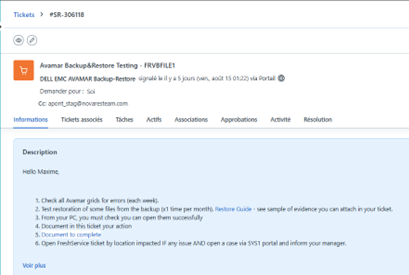
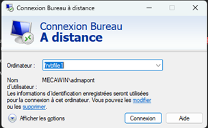
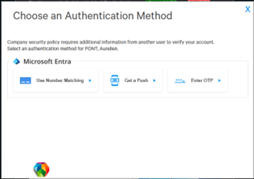
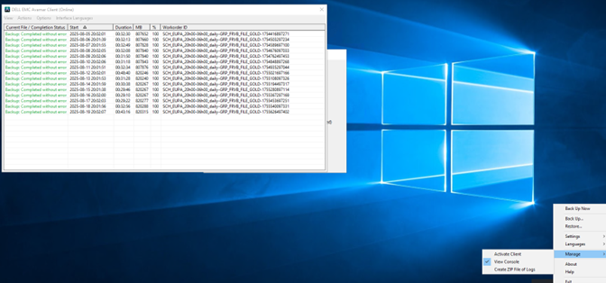
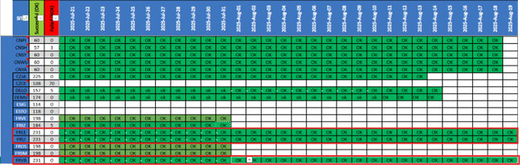

📋 Contexte de la procédure
Vérification hebdomadaire automatisée des statuts de sauvegarde sur l'ensemble des sites Novares. Cette procédure garantit l'intégrité et la disponibilité des données critiques de l'entreprise.
🏢 Site de Lens
Centre d'expertise
🏭 Site de Libercourt
Usine
🏭 Site de Villers-Bretonneux
Usine
⚙️ Procédure technique détaillée
Réception et analyse du ticket
Consultation du ticket généré automatiquement par Freshservice contenant les informations de vérification requises.

Connexion sécurisée au serveur
L'administration s'effectue via l'utilitaire Connexion Bureau à Distance (RDC). La session est établie sur le serveur cible à l'aide du protocole RDP (Remote Desktop Protocol) via un canal chiffré, garantissant l'intégrité des flux d'administration.

Authentification multi-facteurs (MFA)
Validation de l'identité via le système d'authentification à deux facteurs pour sécuriser l'accès.

Cette couche de sécurité supplémentaire garantit que seuls les administrateurs autorisés peuvent accéder aux consoles de gestion des backups.
Activation de la console de gestion
Ouverture de la console administrative permettant la visualisation complète de l'état des sauvegardes.

Cette console centralise toutes les informations relatives aux tâches de sauvegarde programmées et leur état d'exécution.
Analyse des statuts de sauvegarde
Examen systématique de chaque tâche de backup et classification de son état d'exécution.
Documentation dans la feuille de suivi
Mise à jour de la feuille de suivi officielle "Backups Status.xlsx" avec les résultats de la vérification hebdomadaire.

Classification des statuts :
✅ Successful (OK) - Sauvegarde exécutée avec succès❌ Failed (NOK) - Échec de la sauvegarde nécessitant investigation
| Site | Date | Statut | Commentaires |
|---|---|---|---|
| Villers-Bretonneux | 19/08/2024 | OK | Tous les backups exécutés avec succès |
Cette documentation assure la traçabilité et permet le suivi historique des performances de sauvegarde.
Clôture et archivage du ticket
Finalisation de la procédure avec documentation complète et fermeture du ticket dans Freshservice.
Lancement d'un test de restauration
Une restauration test est effectuée mensuellement. Le succès ou l'échec de cette opération est consigné dans le fichier de suivi "Restore.status".
Restore_19-08-2024 est créé, contenant un fichier Office, un PDF et une Image, ainsi qu'un sous-dossier Evidence pour les captures d'écran.
Vérification et preuves de restauration
Une fois la restauration terminée, je vérifie que les fichiers restaurés sont accessibles et lisibles. Cette étape est essentielle : une restauration peut être marquée comme réussie techniquement, mais les données doivent être intégralement exploitables.
doc_OK.png, pdf_OK.png). C'est la preuve technique que la restauration n'est pas seulement terminée, mais que les données sont 100% lisibles.
⚠️ Pour des raisons de confidentialité, les documents restaurés et les captures d'écran réelles ne sont pas présentés ici car ils contiennent des données sensibles de l'entreprise.